Art index
87 images. Generated 2026-11-22T16:34:29Z. Fixed features: art/canon.json.
Bother (3)
 p bother_aggrievedflux-2 $0.024 art/refs/ch01/portraits/bother_aggrieved.pngused: ch1×1
p bother_aggrievedflux-2 $0.024 art/refs/ch01/portraits/bother_aggrieved.pngused: ch1×1prompt
model: fal-ai/flux-2/edit
purpose: sheet
refs: art/refs/ch01/portraits/bother.png
Anime-style character portrait, clean line art, soft cel shading, gentle natural colours. Head and shoulders, three-quarter view turned toward the viewer's right, plain light grey background, no text. The same character as the reference image: same face, same hair, same clothes, same lighting; only the expression changes. Both shoulders visible. Expression: huffy and aggrieved, an air of personal grievance, nose slightly up.
 p bother_alertflux-2 $0.024 art/refs/ch01/portraits/bother_alert.pngused: ch2×1
p bother_alertflux-2 $0.024 art/refs/ch01/portraits/bother_alert.pngused: ch2×1prompt
model: fal-ai/flux-2/edit
purpose: sheet
refs: art/refs/ch01/portraits/bother_aggrieved.png
Anime-style character portrait, clean line art, soft cel shading, gentle natural colours. Head and shoulders, three-quarter view, the face and eyes clearly turned toward the viewer's right, plain light grey background, no text. The same character as the reference image: same face, same hair, same clothes, same lighting; only the expression changes. Both shoulders visible. Expression: alert, bright eyes, looking toward the right with interest. Keep the small folded ears that droop at the tips, as on a seal; the ears are NOT pointed.
 p bother_pleasedflux-2 $0.024 art/refs/ch01/portraits/bother.pngused: ch1×4
p bother_pleasedflux-2 $0.024 art/refs/ch01/portraits/bother.pngused: ch1×4prompt
model: fal-ai/flux-2/edit
purpose: sheet
refs: art/refs/ch01/bother.png
Anime-style character portrait, clean line art, soft cel shading, gentle natural colours. Head and shoulders only, the head and upper chest filling the frame, three-quarter view turned to face the viewer's right, plain light grey background, no text. The same character as the reference image: same face, same hair, same clothes. The tide hound: only the head, neck and collar of plaited cord, pleased with itself.
Davin (4)
 p davin_amusedflux-2 $0.024 art/refs/ch01/portraits/davin_amused.pngused: ch1×1
p davin_amusedflux-2 $0.024 art/refs/ch01/portraits/davin_amused.pngused: ch1×1prompt
model: fal-ai/flux-2/edit
purpose: sheet
refs: art/refs/ch01/portraits/davin.png
Anime-style character portrait, clean line art, soft cel shading, gentle natural colours. Head and shoulders, three-quarter view turned toward the viewer's right, plain light grey background, no text. The same character as the reference image: same face, same hair, same clothes, same lighting; only the expression changes. Both shoulders visible. Expression: amused, laughing softly, eyes crinkled.
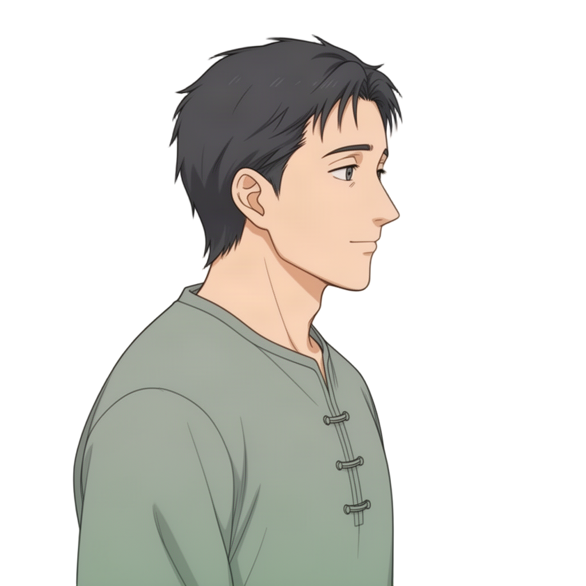
p davin_neutralflux-2 $0.024 art/refs/ch01/portraits/davin_neutral.pngused: ch2×1prompt
model: fal-ai/flux-2/edit
purpose: sheet
refs: art/refs/ch01/portraits/davin.png
Anime-style character portrait, clean line art, soft cel shading, gentle natural colours. Head and shoulders, three-quarter view turned toward the viewer's right, plain light grey background, no text. The same character as the reference image: same face, same hair, same clothes, same lighting; only the expression changes. Both shoulders visible. Expression: calm, neutral, listening.
 p davin_patientflux-2 $0.024 art/refs/ch01/portraits/davin_patient.pngused: ch1×1, ch2×1
p davin_patientflux-2 $0.024 art/refs/ch01/portraits/davin_patient.pngused: ch1×1, ch2×1prompt
model: fal-ai/flux-2/edit
purpose: sheet
refs: art/refs/ch01/portraits/davin.png
Anime-style character portrait, clean line art, soft cel shading, gentle natural colours. Head and shoulders, three-quarter view turned toward the viewer's right, plain light grey background, no text. The same character as the reference image: same face, same hair, same clothes, same lighting; only the expression changes. Both shoulders visible. Expression: patient and kind, head slightly tilted, showing someone how.
 p davin_smileflux-2 $0.024 art/refs/ch01/portraits/davin.pngused: ch2×1
p davin_smileflux-2 $0.024 art/refs/ch01/portraits/davin.pngused: ch2×1prompt
model: fal-ai/flux-2/edit
purpose: sheet
refs: art/refs/ch01/davin.png
Anime-style character portrait, clean line art, soft cel shading, gentle natural colours. Head and shoulders only, the head and upper chest filling the frame, three-quarter view turned to face the viewer's right, plain light grey background, no text. The same character as the reference image: same face, same hair, same clothes. A quiet man with a slow patient smile.
Hesper (5)
 p hesper_angryflux-2 $0.024 art/refs/ch02/portraits/hesper_angry.pngused: ch2×1
p hesper_angryflux-2 $0.024 art/refs/ch02/portraits/hesper_angry.pngused: ch2×1prompt
model: fal-ai/flux-2/edit
purpose: sheet
refs: art/refs/ch02/portraits/hesper.png
Anime-style character portrait, clean line art, soft cel shading, gentle natural colours. Head and shoulders, three-quarter view, the face turned toward the viewer's right, plain light grey background, no text. The same character as the reference image: same face, same hair, same clothes, same lighting; only the expression changes. Both shoulders visible. The eyes are fully drawn with irises, pupils and highlights. Expression: angry, her voice shaking, jaw tight, eyes bright and hard, restrained fury.
 p hesper_shutflux-2 $0.024 art/refs/ch02/portraits/hesper_shut.pngused: ch2×1
p hesper_shutflux-2 $0.024 art/refs/ch02/portraits/hesper_shut.pngused: ch2×1prompt
model: fal-ai/flux-2/edit
purpose: sheet
refs: art/refs/ch02/portraits/hesper.png
Anime-style character portrait, clean line art, soft cel shading, gentle natural colours. Head and shoulders, three-quarter view, the face turned toward the viewer's right, plain light grey background, no text. The same character as the reference image: same face, same hair, same clothes, same lighting; only the expression changes. Both shoulders visible. The eyes are fully drawn with irises, pupils and highlights. Expression: a face like a shut door, completely impassive, holding enormous grief behind it, eyes steady and unreadable.
 p hesper_sternflux-2-t2i $0.012 art/refs/ch02/portraits/hesper.pngused: ch2×4
p hesper_sternflux-2-t2i $0.012 art/refs/ch02/portraits/hesper.pngused: ch2×4prompt
model: fal-ai/flux-2
purpose: sheet
refs:
Anime-style character portrait, clean line art, soft cel shading, gentle natural colours. Head and shoulders, three-quarter view turned toward the viewer's right, plain light grey background, no text. Both shoulders visible. A lean, hard woman of about forty with a strong, tired face, dark hair pulled back severely, weathered skin, calm and stern. She wears a plain tunic of fine grey-green cloth that gleams like the inside of a shell. She is a hold's Tidecaller, a person people make room for.
 p hesper_teacherflux-2 $0.024 art/refs/ch02/portraits/hesper_teacher.pngused: ch2×1
p hesper_teacherflux-2 $0.024 art/refs/ch02/portraits/hesper_teacher.pngused: ch2×1prompt
model: fal-ai/flux-2/edit
purpose: sheet
refs: art/refs/ch02/portraits/hesper.png
Anime-style character portrait, clean line art, soft cel shading, gentle natural colours. Head and shoulders, three-quarter view, the face turned toward the viewer's right, plain light grey background, no text. The same character as the reference image: same face, same hair, same clothes, same lighting; only the expression changes. Both shoulders visible. The eyes are fully drawn with irises, pupils and highlights. Expression: calm, level and instructing, the patient stern face of a teacher explaining something difficult.
 p hesper_tiredflux-2 $0.024 art/refs/ch02/portraits/hesper_tired.pngused: ch2×3
p hesper_tiredflux-2 $0.024 art/refs/ch02/portraits/hesper_tired.pngused: ch2×3prompt
model: fal-ai/flux-2/edit
purpose: sheet
refs: art/refs/ch02/portraits/hesper.png
Anime-style character portrait, clean line art, soft cel shading, gentle natural colours. Head and shoulders, three-quarter view, the face turned toward the viewer's right, plain light grey background, no text. The same character as the reference image: same face, same hair, same clothes, same lighting; only the expression changes. Both shoulders visible. The eyes are fully drawn with irises, pupils and highlights. Expression: exhausted, eyes lowered, shoulders heavy, drained.
Ione (6)
 p ione_calmflux-2 $0.024 art/refs/ch01/portraits/ione.pngused: ch1×1
p ione_calmflux-2 $0.024 art/refs/ch01/portraits/ione.pngused: ch1×1prompt
model: fal-ai/flux-2/edit
purpose: sheet
refs: /private/tmp/claude-501/-Users-ursschweigert-Documents-GitHub-OvaraVN/cc48d835-f556-4c15-90fe-4f84aaa68c2a/scratchpad/ione_head.png
Anime-style character portrait, clean line art, soft cel shading, gentle natural colours. Head and shoulders only, the head and upper chest filling the frame, three-quarter view turned to face the viewer's right, plain light grey background, no text. The same character as the reference image: same face, same hair, same clothes. A broad calm woman, healer, calm and cautious expression.
 p ione_cautiousflux-2 $0.024 art/refs/ch01/portraits/ione_cautious.pngused: ch1×1
p ione_cautiousflux-2 $0.024 art/refs/ch01/portraits/ione_cautious.pngused: ch1×1prompt
model: fal-ai/flux-2/edit
purpose: sheet
refs: /private/tmp/claude-501/-Users-ursschweigert-Documents-GitHub-OvaraVN/cc48d835-f556-4c15-90fe-4f84aaa68c2a/scratchpad/ione_head.png
Anime-style character portrait, clean line art, soft cel shading, gentle natural colours. Head and shoulders, three-quarter view turned toward the viewer's right, plain light grey background, no text. The same character as the reference image: same face, same hair, same clothes, same lighting; only the expression changes. Both shoulders visible. Expression: cautious, concerned, a slight frown.
 p ione_concentratingflux-2 $0.024 art/refs/ch01/portraits/ione_concentrating.pngused: unused
p ione_concentratingflux-2 $0.024 art/refs/ch01/portraits/ione_concentrating.pngused: unusedprompt
model: fal-ai/flux-2/edit
purpose: sheet
refs: /private/tmp/claude-501/-Users-ursschweigert-Documents-GitHub-OvaraVN/cc48d835-f556-4c15-90fe-4f84aaa68c2a/scratchpad/ione_head.png
Anime-style character portrait, clean line art, soft cel shading, gentle natural colours. Head and shoulders, three-quarter view turned toward the viewer's right, plain light grey background, no text. The same character as the reference image: same face, same hair, same clothes, same lighting; only the expression changes. Both shoulders visible. Expression: eyes closed, deeply concentrating, very still.
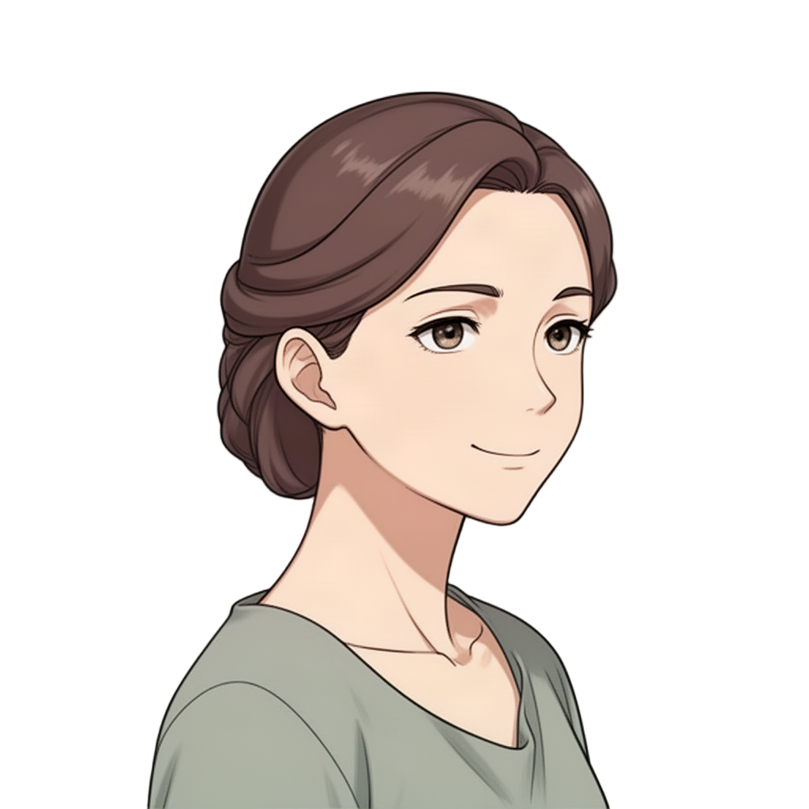
p ione_gentleflux-2 $0.024 art/refs/ch01/portraits/ione_gentle.pngused: ch1×1, ch2×1prompt
model: fal-ai/flux-2/edit
purpose: sheet
refs: /private/tmp/claude-501/-Users-ursschweigert-Documents-GitHub-OvaraVN/cc48d835-f556-4c15-90fe-4f84aaa68c2a/scratchpad/ione_head.png
Anime-style character portrait, clean line art, soft cel shading, gentle natural colours. Head and shoulders, three-quarter view turned toward the viewer's right, plain light grey background, no text. The same character as the reference image: same face, same hair, same clothes, same lighting; only the expression changes. Both shoulders visible. Expression: a gentle, kind, small smile.
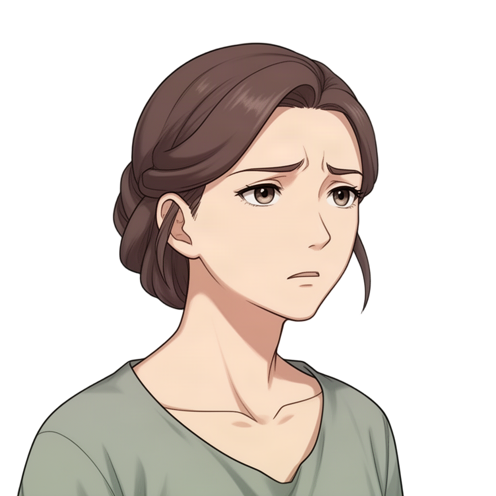
p ione_graveflux-2 $0.024 art/refs/ch01/portraits/ione_grave.pngused: ch1×2prompt
model: fal-ai/flux-2/edit
purpose: sheet
refs: /private/tmp/claude-501/-Users-ursschweigert-Documents-GitHub-OvaraVN/cc48d835-f556-4c15-90fe-4f84aaa68c2a/scratchpad/ione_head.png
Anime-style character portrait, clean line art, soft cel shading, gentle natural colours. Head and shoulders, three-quarter view turned toward the viewer's right, plain light grey background, no text. The same character as the reference image: same face, same hair, same clothes, same lighting; only the expression changes. Both shoulders visible. Expression: grave, speaking plainly with bad news, eyes steady.
 p ione_painflux-2 $0.024 art/refs/ch02/portraits/ione_pain.pngused: unused
p ione_painflux-2 $0.024 art/refs/ch02/portraits/ione_pain.pngused: unusedprompt
model: fal-ai/flux-2/edit
purpose: sheet
refs: art/refs/ch01/portraits/ione.png
Anime-style character portrait, clean line art, soft cel shading, gentle natural colours. Head and shoulders, three-quarter view, the face turned toward the viewer's right, plain light grey background, no text. The same character as the reference image: same face, same hair, same clothes, same lighting; only the expression changes. Both shoulders visible. The eyes are fully drawn with irises, pupils and highlights. Expression: in pain but working on, teeth set, brow tight, steady eyes.
Okonta (4)
 p okonta_graveflux-2-t2i $0.012 art/refs/ch02/portraits/okonta.pngused: ch2×1
p okonta_graveflux-2-t2i $0.012 art/refs/ch02/portraits/okonta.pngused: ch2×1prompt
model: fal-ai/flux-2
purpose: sheet
refs:
Anime-style character portrait, clean line art, soft cel shading, gentle natural colours. Head and shoulders, three-quarter view turned toward the viewer's right, plain light grey background, no text. Both shoulders visible. A spare woman of about sixty with dark brown skin and short grey hair, a grave, composed expression. She wears a close-fitting slate-grey suit with a high collar. Thin pale scars, as fine as pen lines, run from her temples down both sides of her neck and under her collar.
 p okonta_sorrowflux-2 $0.024 art/refs/ch02/portraits/okonta_sorrow.pngused: ch2×1
p okonta_sorrowflux-2 $0.024 art/refs/ch02/portraits/okonta_sorrow.pngused: ch2×1prompt
model: fal-ai/flux-2/edit
purpose: sheet
refs: art/refs/ch02/portraits/okonta.png
Anime-style character portrait, clean line art, soft cel shading, gentle natural colours. Head and shoulders, three-quarter view, the face turned toward the viewer's right, plain light grey background, no text. The same character as the reference image: same face, same hair, same clothes, same lighting; only the expression changes. Both shoulders visible. The eyes are fully drawn with irises, pupils and highlights. Expression: quiet sorrow, eyes lowered, a long loss.
 p okonta_urgentflux-2 $0.024 art/refs/ch02/portraits/okonta_urgent.pngused: ch2×1
p okonta_urgentflux-2 $0.024 art/refs/ch02/portraits/okonta_urgent.pngused: ch2×1prompt
model: fal-ai/flux-2/edit
purpose: sheet
refs: art/refs/ch02/portraits/okonta.png
Anime-style character portrait, clean line art, soft cel shading, gentle natural colours. Head and shoulders, three-quarter view, the face turned toward the viewer's right, plain light grey background, no text. The same character as the reference image: same face, the SAME DARK BROWN SKIN, same short grey hair, same slate-grey high-collared suit, same fine pale scars at the temples and neck; only the expression changes. Both shoulders visible. The eyes are fully drawn with irises, pupils and highlights. Expression: urgent and decisive, speaking, eyes direct.
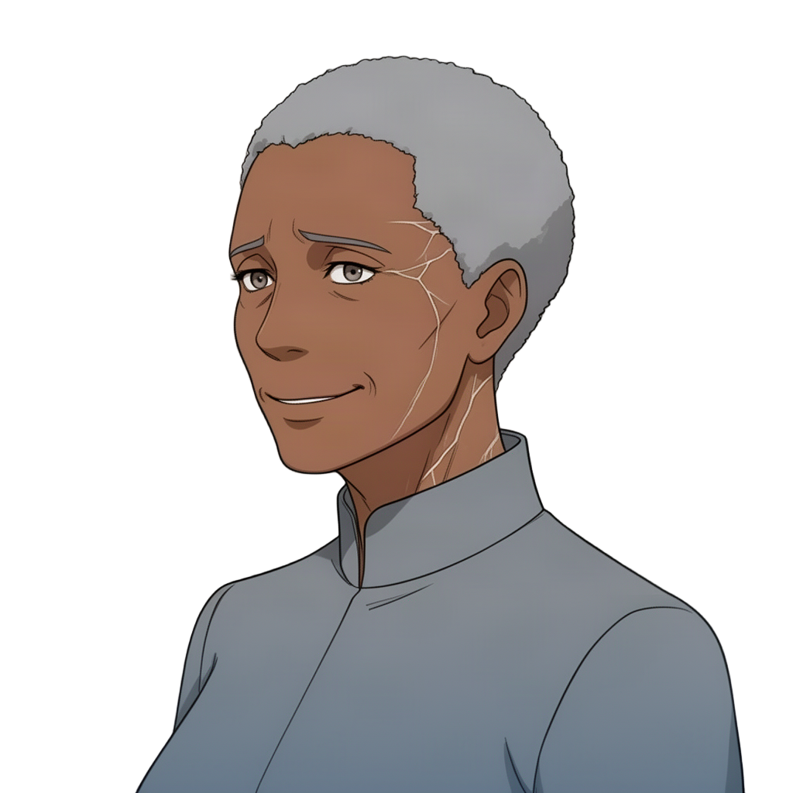
p okonta_wryflux-2 $0.024 art/refs/ch02/portraits/okonta_wry.pngused: ch2×1prompt
model: fal-ai/flux-2/edit
purpose: sheet
refs: art/refs/ch02/portraits/okonta.png
Anime-style character portrait, clean line art, soft cel shading, gentle natural colours. Head and shoulders, three-quarter view, the face turned toward the viewer's right, plain light grey background, no text. The same character as the reference image: same face, the SAME DARK BROWN SKIN, same short grey hair, same slate-grey high-collared suit, same fine pale scars at the temples and neck; only the expression changes. Both shoulders visible. The eyes are fully drawn with irises, pupils and highlights. Expression: a slight, dry, weary smile, kind eyes.
Elder Oro (6)
 p oro_contentflux-2 $0.024 art/refs/ch02/portraits/oro_content.pngused: ch2×3
p oro_contentflux-2 $0.024 art/refs/ch02/portraits/oro_content.pngused: ch2×3prompt
model: fal-ai/flux-2/edit
purpose: sheet
refs: art/refs/ch01/portraits/oro.png
Anime-style character portrait, clean line art, soft cel shading, gentle natural colours. Head and shoulders, three-quarter view, the face turned toward the viewer's right, plain light grey background, no text. The same character as the reference image: same face, same hair, same clothes, same lighting; only the expression changes. Both shoulders visible. The eyes are fully drawn with irises, pupils and highlights. A subdued, quiet, realistic expression: no grin, no laughing, no wide open mouth, no wink. Expression: quietly contented, a small gentle smile, eyes soft and peaceful.
 p oro_delightedflux-2 $0.024 art/refs/ch02/portraits/oro_delighted.pngused: unused
p oro_delightedflux-2 $0.024 art/refs/ch02/portraits/oro_delighted.pngused: unusedprompt
model: fal-ai/flux-2/edit
purpose: sheet
refs: art/refs/ch01/portraits/oro.png
Anime-style character portrait, clean line art, soft cel shading, gentle natural colours. Head and shoulders, three-quarter view, the face turned toward the viewer's right, plain light grey background, no text. The same character as the reference image: same face, same hair, same clothes, same lighting; only the expression changes. Both shoulders visible. The eyes are fully drawn with irises, pupils and highlights. Expression: delighted, a broad warm happy smile, eyes shining.
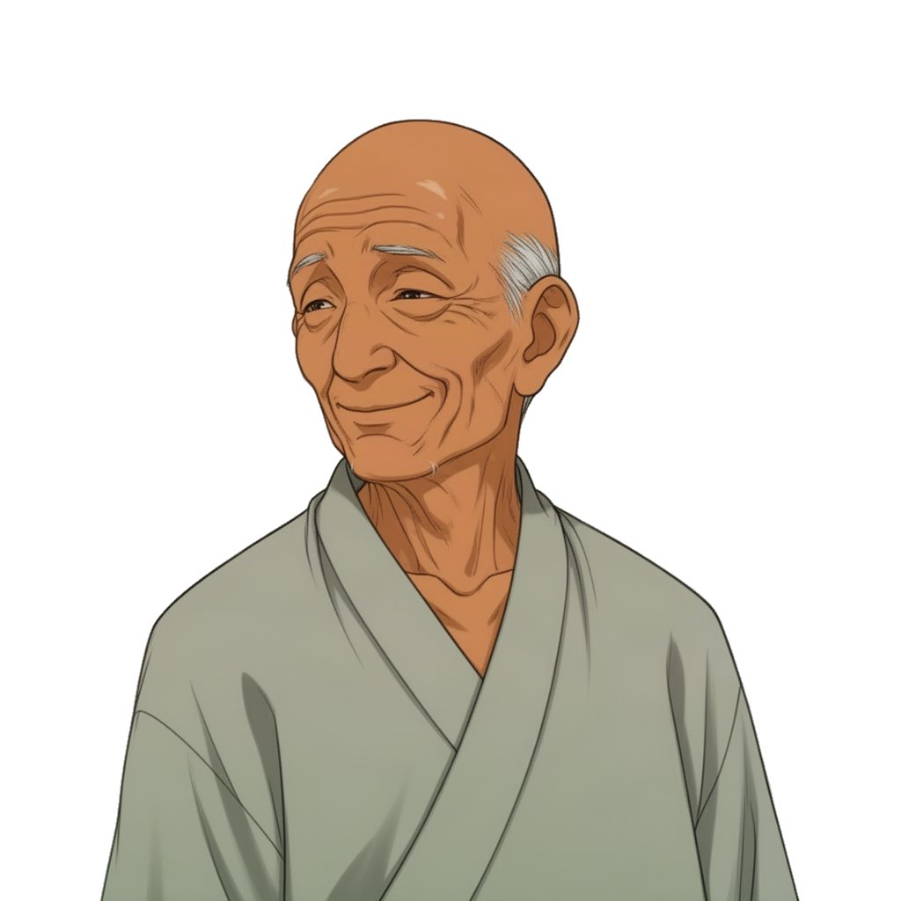
p oro_gentleflux-2 $0.024 art/refs/ch01/portraits/oro.pngused: ch1×2, ch2×1prompt
model: fal-ai/flux-2/edit
purpose: sheet
refs: art/refs/ch01/oro.png
Anime-style character portrait, clean line art, soft cel shading, gentle natural colours. Head and shoulders only, the head and upper chest filling the frame, three-quarter view turned to face the viewer's right, plain light grey background, no text. The same character as the reference image: same face, same hair, same clothes. A very old man, bald brown head, gentle amused expression.
 p oro_graveflux-2 $0.024 art/refs/ch01/portraits/oro_grave.pngused: ch1×2
p oro_graveflux-2 $0.024 art/refs/ch01/portraits/oro_grave.pngused: ch1×2prompt
model: fal-ai/flux-2/edit
purpose: sheet
refs: art/refs/ch01/portraits/oro.png
Anime-style character portrait, clean line art, soft cel shading, gentle natural colours. Head and shoulders, three-quarter view turned toward the viewer's right, plain light grey background, no text. The same character as the reference image: same face, same hair, same clothes, same lighting; only the expression changes. Both shoulders visible. Expression: grave and serious, speaking, eyes steady.
 p oro_thoughtfulflux-2 $0.024 art/refs/ch01/portraits/oro_thoughtful.pngused: ch1×1
p oro_thoughtfulflux-2 $0.024 art/refs/ch01/portraits/oro_thoughtful.pngused: ch1×1prompt
model: fal-ai/flux-2/edit
purpose: sheet
refs: art/refs/ch01/portraits/oro.png
Anime-style character portrait, clean line art, soft cel shading, gentle natural colours. Head and shoulders, three-quarter view turned toward the viewer's right, plain light grey background, no text. The same character as the reference image: same face, same hair, same clothes, same lighting; only the expression changes. Both shoulders visible. Expression: thoughtful, eyes lowered as if looking at something in front of him.
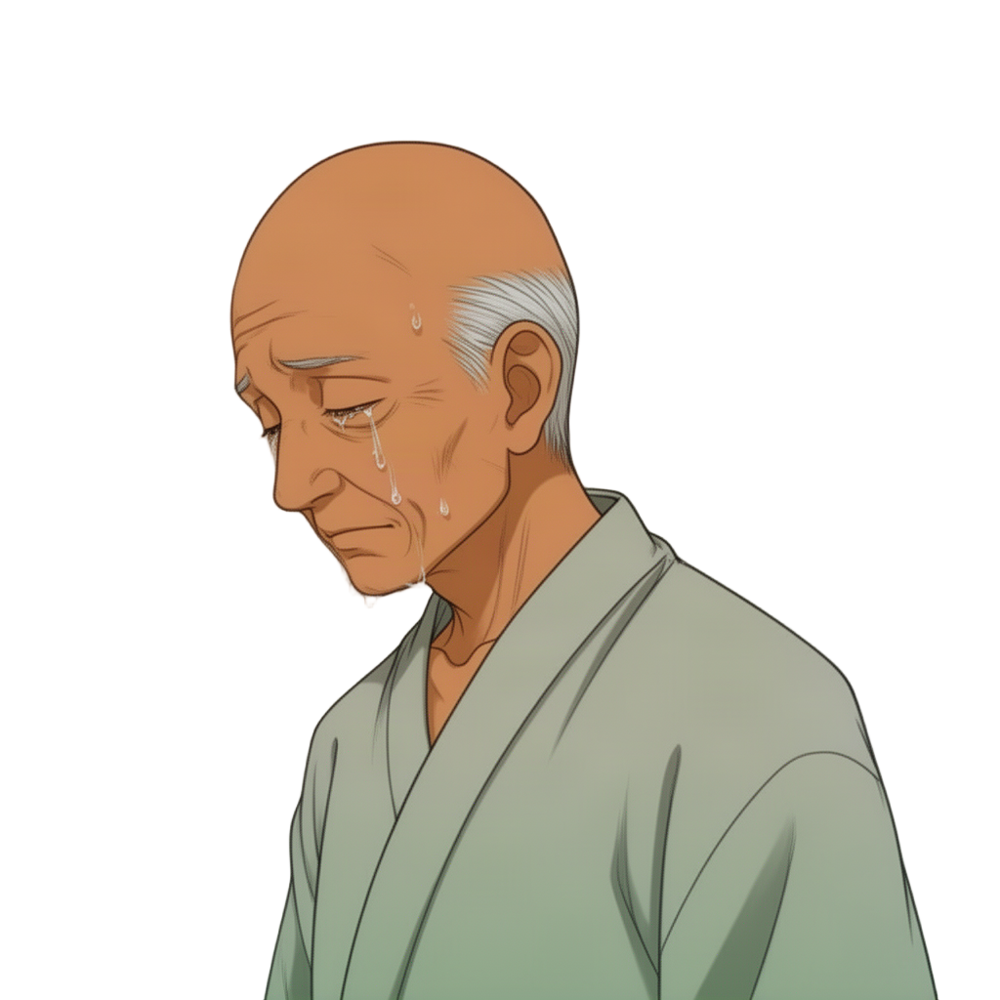
p oro_weepingflux-2 $0.024 art/refs/ch01/portraits/oro_weeping.pngused: ch1×1prompt
model: fal-ai/flux-2/edit
purpose: sheet
refs: art/refs/ch01/portraits/oro.png
Anime-style character portrait, clean line art, soft cel shading, gentle natural colours. Head and shoulders, three-quarter view turned toward the viewer's right, plain light grey background, no text. The same character as the reference image: same face, same hair, same clothes, same lighting; only the expression changes. Both shoulders visible. Expression: weeping quietly, tears on his cheeks, overwhelmed and moved.
Sefa (8)
 p sefa_amazedflux-2 $0.024 art/refs/ch01/portraits/sefa_amazed.pngused: ch1×2
p sefa_amazedflux-2 $0.024 art/refs/ch01/portraits/sefa_amazed.pngused: ch1×2prompt
model: fal-ai/flux-2/edit
purpose: sheet
refs: art/refs/ch01/portraits/sefa.png
Anime-style character portrait, clean line art, soft cel shading, gentle natural colours. Head and shoulders, three-quarter view turned toward the viewer's right, plain light grey background, no text. The same character as the reference image: same face, same hair, same clothes, same lighting; only the expression changes. Both shoulders visible. Expression: amazed, eyes wide, lips parted, breathless.
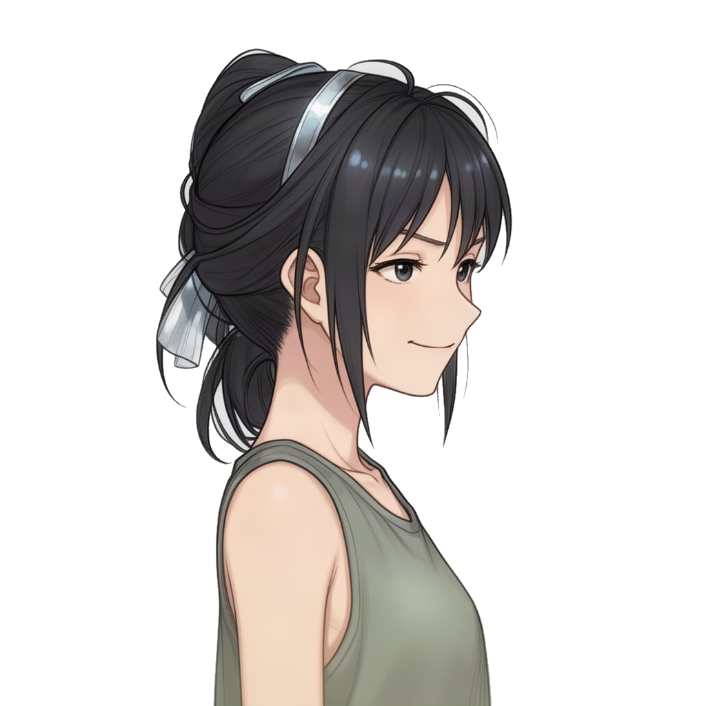
p sefa_amusedflux-2 $0.024 art/refs/ch01/portraits/sefa_amused.pngused: ch1×7, ch2×1prompt
model: fal-ai/flux-2/edit
purpose: sheet
refs: art/refs/ch01/portraits/sefa.png
Anime-style character portrait, clean line art, soft cel shading, gentle natural colours. Head and shoulders, three-quarter view turned toward the viewer's right, plain light grey background, no text. The same character as the reference image: same face, same hair, same clothes, same lighting; only the expression changes. Both shoulders visible. Expression: amused, a small dry smile, one eyebrow raised.
 p sefa_easyflux-2 $0.024 art/refs/ch02/portraits/sefa_easy.pngused: ch2×1
p sefa_easyflux-2 $0.024 art/refs/ch02/portraits/sefa_easy.pngused: ch2×1prompt
model: fal-ai/flux-2/edit
purpose: sheet
refs: art/refs/ch01/portraits/sefa.png
Anime-style character portrait, clean line art, soft cel shading, gentle natural colours. Head and shoulders, three-quarter view, the face turned toward the viewer's right, plain light grey background, no text. The same character as the reference image: same face, same hair, same clothes, same lighting; only the expression changes. Both shoulders visible. The eyes are fully drawn with irises, pupils and highlights. A subdued, quiet, realistic expression: no grin, no laughing, no wide open mouth, no wink. Expression: relaxed and at ease, a very small closed-mouth smile, eyes soft, the tension gone.
 p sefa_fierceflux-2 $0.024 art/refs/ch02/portraits/sefa_fierce.pngused: ch2×1
p sefa_fierceflux-2 $0.024 art/refs/ch02/portraits/sefa_fierce.pngused: ch2×1prompt
model: fal-ai/flux-2/edit
purpose: sheet
refs: art/refs/ch01/portraits/sefa.png
Anime-style character portrait, clean line art, soft cel shading, gentle natural colours. Head and shoulders, three-quarter view, the face turned toward the viewer's right, plain light grey background, no text. The same character as the reference image: same face, same hair, same clothes, same lighting; only the expression changes. Both shoulders visible. The eyes are fully drawn with irises, pupils and highlights. Expression: fierce, eyes hard and blazing, chin lifted, ready to fight.
 p sefa_proudflux-2 $0.024 art/refs/ch01/portraits/sefa_proud.pngused: ch1×4
p sefa_proudflux-2 $0.024 art/refs/ch01/portraits/sefa_proud.pngused: ch1×4prompt
model: fal-ai/flux-2/edit
purpose: sheet
refs: art/refs/ch01/portraits/sefa.png
Anime-style character portrait, clean line art, soft cel shading, gentle natural colours. Head and shoulders, three-quarter view turned toward the viewer's right, plain light grey background, no text. The same character as the reference image: same face, same hair, same clothes, same lighting; only the expression changes. Both shoulders visible. Expression: proud, chin lifted, a slight smirk.
 p sefa_sharpflux-2 $0.024 art/refs/ch01/portraits/sefa_sharp.pngused: ch1×2, ch2×1
p sefa_sharpflux-2 $0.024 art/refs/ch01/portraits/sefa_sharp.pngused: ch1×2, ch2×1prompt
model: fal-ai/flux-2/edit
purpose: sheet
refs: art/refs/ch01/portraits/sefa.png
Anime-style character portrait, clean line art, soft cel shading, gentle natural colours. Head and shoulders, three-quarter view turned toward the viewer's right, plain light grey background, no text. The same character as the reference image: same face, same hair, same clothes, same lighting; only the expression changes. Both shoulders visible. Expression: sharp, suspicious look, eyes narrowed, mouth firm.
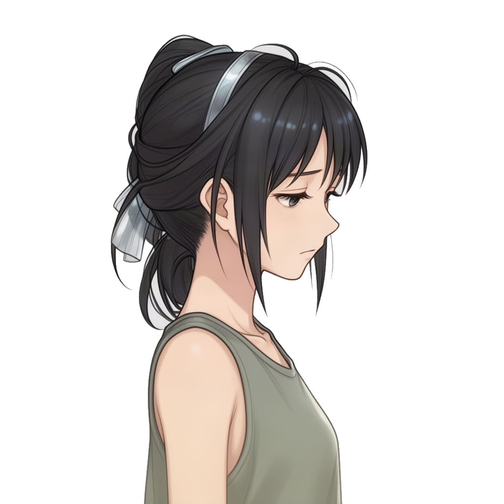
p sefa_thoughtfulflux-2 $0.024 art/refs/ch01/portraits/sefa_thoughtful.pngused: ch1×7prompt
model: fal-ai/flux-2/edit
purpose: sheet
refs: art/refs/ch01/portraits/sefa.png
Anime-style character portrait, clean line art, soft cel shading, gentle natural colours. Head and shoulders, three-quarter view turned toward the viewer's right, plain light grey background, no text. The same character as the reference image: same face, same hair, same clothes, same lighting; only the expression changes. Both shoulders visible. Expression: thoughtful, eyes lowered, considering something honestly.
 p sefa_waryflux-2 $0.024 art/refs/ch01/portraits/sefa.pngused: ch1×4
p sefa_waryflux-2 $0.024 art/refs/ch01/portraits/sefa.pngused: ch1×4prompt
model: fal-ai/flux-2/edit
purpose: sheet
refs: art/refs/ch01/sefa.png
Anime-style character portrait, clean line art, soft cel shading, gentle natural colours. Head and shoulders only, the head and upper chest filling the frame, three-quarter view turned to face the viewer's right, plain light grey background, no text. The same character as the reference image: same face, same hair, same clothes. A girl of about sixteen, calm and wary, dark hair tied back with a shining strip.
Wrack (16)
 p wrack_bewilderedflux-2 $0.024 art/refs/ch01/portraits/wrack.pngused: ch1×3
p wrack_bewilderedflux-2 $0.024 art/refs/ch01/portraits/wrack.pngused: ch1×3prompt
model: fal-ai/flux-2/edit
purpose: sheet
refs: art/refs/ch01/wrack.png
Anime-style character portrait, clean line art, soft cel shading, gentle natural colours. Head and shoulders, three-quarter view turned toward the viewer's right, plain light grey background, no text. The same character as the reference image: same face, same hair, same clothes. Both shoulders and both sleeves fully visible and symmetrical, nothing cut off. A man with a bewildered, troubled expression, wearing a grey zip jacket with a small shield-shaped crest on the chest, a little torn at the sleeves but both arms intact.
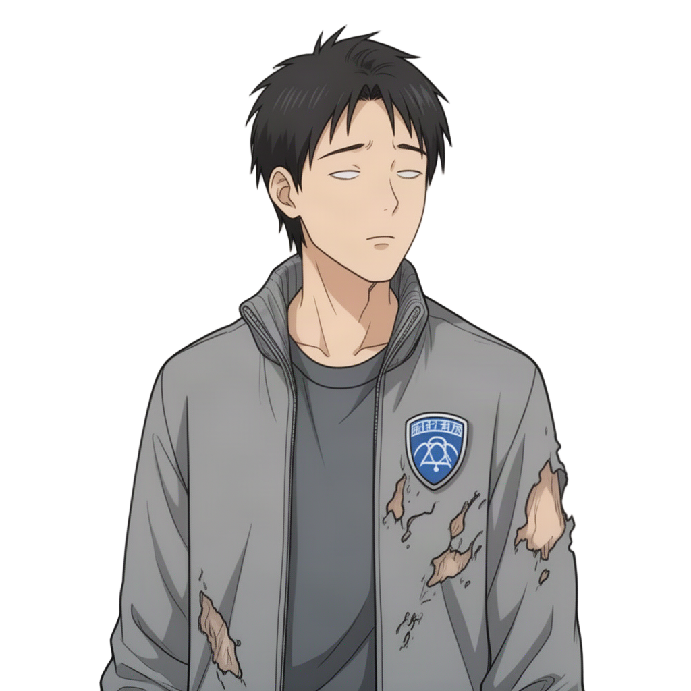
p wrack_blankflux-2 $0.024 art/refs/ch01/portraits/wrack_blank.pngused: ch1×2prompt
model: fal-ai/flux-2/edit
purpose: sheet
refs: art/refs/ch01/portraits/wrack.png
Anime-style character portrait, clean line art, soft cel shading, gentle natural colours. Head and shoulders, three-quarter view, the face turned toward the viewer's right, plain light grey background, no text. The same character as the reference image: same face, same hair, same clothes, same lighting; only the expression changes. Both shoulders visible. Expression: lost and distant, a dull unfocused gaze looking at nothing, eyelids slightly lowered, mouth slightly open, face slack and drained of feeling. The eyes are fully drawn with dark irises, pupils and small highlights; never leave the eyes white or empty. The head is tilted a little downward.
 p wrack_painedflux-2 $0.024 art/refs/ch01/portraits/wrack_pained.pngused: ch1×3
p wrack_painedflux-2 $0.024 art/refs/ch01/portraits/wrack_pained.pngused: ch1×3prompt
model: fal-ai/flux-2/edit
purpose: sheet
refs: art/refs/ch01/portraits/wrack.png
Anime-style character portrait, clean line art, soft cel shading, gentle natural colours. Head and shoulders, three-quarter view turned toward the viewer's right, plain light grey background, no text. The same character as the reference image: same face, same hair, same clothes, same lighting; only the expression changes. Both shoulders visible. Expression: pained, a wince, hurt by the air.
 p wrack_puzzledflux-2 $0.024 art/refs/ch01/portraits/wrack_puzzled.pngused: ch1×7
p wrack_puzzledflux-2 $0.024 art/refs/ch01/portraits/wrack_puzzled.pngused: ch1×7prompt
model: fal-ai/flux-2/edit
purpose: sheet
refs: art/refs/ch01/portraits/wrack.png
Anime-style character portrait, clean line art, soft cel shading, gentle natural colours. Head and shoulders, three-quarter view, the face and eyes clearly turned toward the viewer's right, plain light grey background, no text. The same character as the reference image: same face, same hair, same clothes, same lighting; only the expression changes. Both shoulders visible. Expression: puzzled, brow furrowed, looking toward the right.
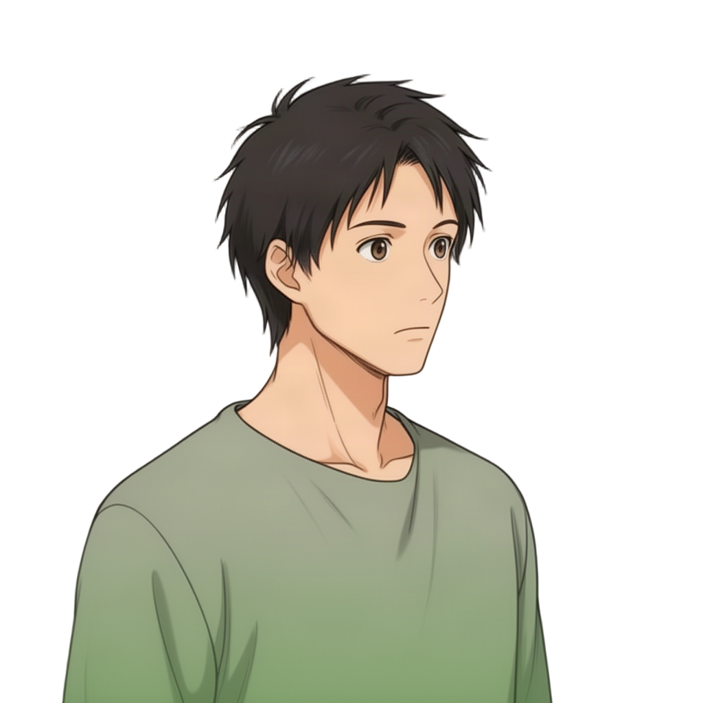
p wrack_tunic_attentiveflux-2 $0.024 art/refs/ch02/portraits/wrack_tunic_attentive.pngused: ch2×6prompt
model: fal-ai/flux-2/edit
purpose: sheet
refs: art/refs/ch01/portraits/wrack_tunic.png
Anime-style character portrait, clean line art, soft cel shading, gentle natural colours. Head and shoulders, three-quarter view, the face turned toward the viewer's right, plain light grey background, no text. The same character as the reference image: same face, same hair, same clothes, same lighting; only the expression changes. Both shoulders visible. The eyes are fully drawn with irises, pupils and highlights. A subdued, quiet, realistic expression: no grin, no laughing, no wide open mouth, no wink. Expression: quietly attentive and interested, eyes steady and thoughtful, mouth closed, brow relaxed, looking at something with calm curiosity.
p wrack_tunic_baffledflux-2 $0.024 art/refs/ch02/portraits/wrack_tunic_baffled.pngused: ch2×1prompt
model: fal-ai/flux-2/edit
purpose: sheet
refs: art/refs/ch01/portraits/wrack_tunic.png
Anime-style character portrait, clean line art, soft cel shading, gentle natural colours. Head and shoulders, three-quarter view, the face turned toward the viewer's right, plain light grey background, no text. The same character as the reference image: same face, same hair, same clothes, same lighting; only the expression changes. Both shoulders visible. The eyes are fully drawn with irises, pupils and highlights. Expression: baffled, brow furrowed, mouth slightly open.
 p wrack_tunic_calmflux-2 $0.024 art/refs/ch02/portraits/wrack_tunic_calm.pngused: ch2×1
p wrack_tunic_calmflux-2 $0.024 art/refs/ch02/portraits/wrack_tunic_calm.pngused: ch2×1prompt
model: fal-ai/flux-2/edit
purpose: sheet
refs: art/refs/ch01/portraits/wrack_tunic.png
Anime-style character portrait, clean line art, soft cel shading, gentle natural colours. Head and shoulders, three-quarter view, the face turned toward the viewer's right, plain light grey background, no text. The same character as the reference image: same face, same hair, same clothes, same lighting; only the expression changes. Both shoulders visible. The eyes are fully drawn with irises, pupils and highlights. A subdued, quiet, realistic expression: no grin, no laughing, no wide open mouth, no wink. Expression: calm and settled, relaxed face, no tension, listening, neutral mouth.
 p wrack_tunic_despairflux-2 $0.024 art/refs/ch02/portraits/wrack_tunic_despair.pngused: ch2×3
p wrack_tunic_despairflux-2 $0.024 art/refs/ch02/portraits/wrack_tunic_despair.pngused: ch2×3prompt
model: fal-ai/flux-2/edit
purpose: sheet
refs: art/refs/ch01/portraits/wrack_tunic.png
Anime-style character portrait, clean line art, soft cel shading, gentle natural colours. Head and shoulders, three-quarter view, the face turned toward the viewer's right, plain light grey background, no text. The same character as the reference image: same face, same hair, same clothes, same lighting; only the expression changes. Both shoulders visible. The eyes are fully drawn with irises, pupils and highlights. Expression: despairing, eyes glistening, face crumpling.
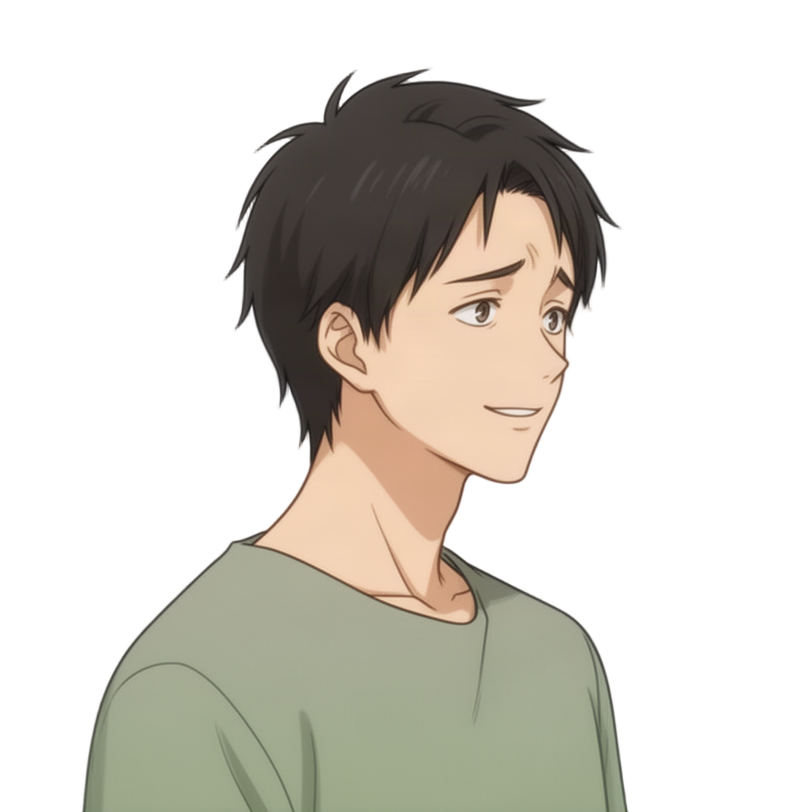
p wrack_tunic_faint_smileflux-2 $0.024 art/refs/ch01/portraits/wrack_tunic_faint_smile.pngused: ch1×1, ch2×1prompt
model: fal-ai/flux-2/edit
purpose: sheet
refs: /private/tmp/claude-501/-Users-ursschweigert-Documents-GitHub-OvaraVN/cc48d835-f556-4c15-90fe-4f84aaa68c2a/scratchpad/wrack_tunic_head.png
Anime-style character portrait, clean line art, soft cel shading, gentle natural colours. Head and shoulders, three-quarter view turned toward the viewer's right, plain light grey background, no text. The same character as the reference image: same face, same hair, same clothes, same lighting; only the expression changes. Both shoulders visible. Expression: a faint, tentative smile, warmed and unsure.
 p wrack_tunic_frightenedflux-2 $0.024 art/refs/ch01/portraits/wrack_tunic_frightened.pngused: ch1×1, ch2×2
p wrack_tunic_frightenedflux-2 $0.024 art/refs/ch01/portraits/wrack_tunic_frightened.pngused: ch1×1, ch2×2prompt
model: fal-ai/flux-2/edit
purpose: sheet
refs: /private/tmp/claude-501/-Users-ursschweigert-Documents-GitHub-OvaraVN/cc48d835-f556-4c15-90fe-4f84aaa68c2a/scratchpad/wrack_tunic_head.png
Anime-style character portrait, clean line art, soft cel shading, gentle natural colours. Head and shoulders, three-quarter view, the face and eyes clearly turned toward the viewer's right, plain light grey background, no text. The same character as the reference image: same face, same hair, same clothes, same lighting; only the expression changes. Both shoulders visible. Expression: frightened, eyes wide, taut, looking toward the right.
 p wrack_tunic_lostflux-2 $0.024 art/refs/ch01/portraits/wrack_tunic_lost.pngused: ch1×3, ch2×1
p wrack_tunic_lostflux-2 $0.024 art/refs/ch01/portraits/wrack_tunic_lost.pngused: ch1×3, ch2×1prompt
model: fal-ai/flux-2/edit
purpose: sheet
refs: /private/tmp/claude-501/-Users-ursschweigert-Documents-GitHub-OvaraVN/cc48d835-f556-4c15-90fe-4f84aaa68c2a/scratchpad/wrack_tunic_head.png
Anime-style character portrait, clean line art, soft cel shading, gentle natural colours. Head and shoulders, three-quarter view turned toward the viewer's right, plain light grey background, no text. The same character as the reference image: same face, same hair, same clothes, same lighting; only the expression changes. Both shoulders visible. Expression: lost, blank, staring at nothing, empty.
 p wrack_tunic_resolvedflux-2 $0.024 art/refs/ch02/portraits/wrack_tunic_resolved.pngused: ch2×2
p wrack_tunic_resolvedflux-2 $0.024 art/refs/ch02/portraits/wrack_tunic_resolved.pngused: ch2×2prompt
model: fal-ai/flux-2/edit
purpose: sheet
refs: art/refs/ch01/portraits/wrack_tunic.png
Anime-style character portrait, clean line art, soft cel shading, gentle natural colours. Head and shoulders, three-quarter view, the face turned toward the viewer's right, plain light grey background, no text. The same character as the reference image: same face, same hair, same clothes, same lighting; only the expression changes. Both shoulders visible. The eyes are fully drawn with irises, pupils and highlights. Expression: resolved, jaw set, eyes steady and determined.
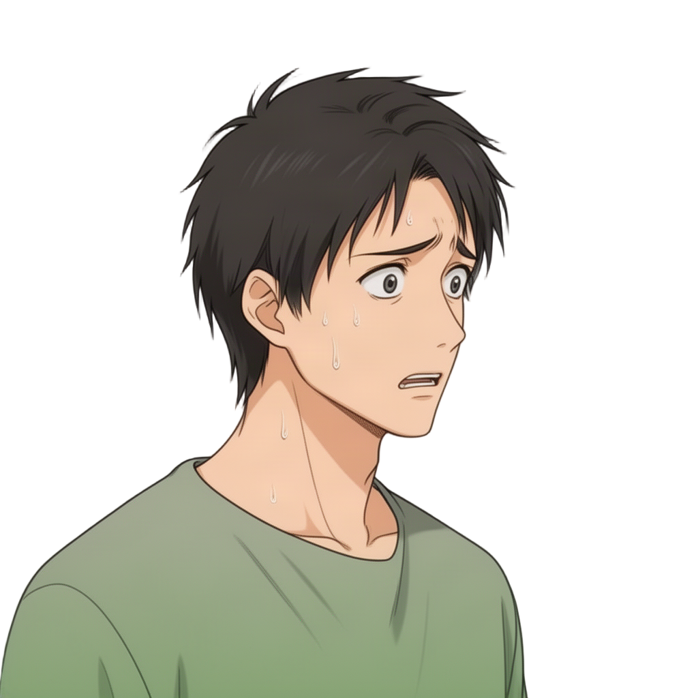
p wrack_tunic_shakenflux-2 $0.024 art/refs/ch02/portraits/wrack_tunic_shaken.pngused: ch2×3prompt
model: fal-ai/flux-2/edit
purpose: sheet
refs: art/refs/ch01/portraits/wrack_tunic.png
Anime-style character portrait, clean line art, soft cel shading, gentle natural colours. Head and shoulders, three-quarter view, the face turned toward the viewer's right, plain light grey background, no text. The same character as the reference image: same face, same hair, same clothes, same lighting; only the expression changes. Both shoulders visible. The eyes are fully drawn with irises, pupils and highlights. Expression: shaken, pale and sweating, eyes wide and unsteady.
 p wrack_tunic_shiveringflux-2 $0.024 art/refs/ch02/portraits/wrack_tunic_shivering.pngused: ch2×1
p wrack_tunic_shiveringflux-2 $0.024 art/refs/ch02/portraits/wrack_tunic_shivering.pngused: ch2×1prompt
model: fal-ai/flux-2/edit
purpose: sheet
refs: art/refs/ch01/portraits/wrack_tunic.png
Anime-style character portrait, clean line art, soft cel shading, gentle natural colours. Head and shoulders, three-quarter view, the face turned toward the viewer's right, plain light grey background, no text. The same character as the reference image: same face, same hair, same clothes, same lighting; only the expression changes. Both shoulders visible. The eyes are fully drawn with irises, pupils and highlights. Expression: ebbed and shivering, drained, gaze unfocused but with pupils, lips pale.
 p wrack_tunic_softflux-2 $0.024 art/refs/ch02/portraits/wrack_tunic_soft.pngused: ch2×2
p wrack_tunic_softflux-2 $0.024 art/refs/ch02/portraits/wrack_tunic_soft.pngused: ch2×2prompt
model: fal-ai/flux-2/edit
purpose: sheet
refs: art/refs/ch01/portraits/wrack_tunic.png
Anime-style character portrait, clean line art, soft cel shading, gentle natural colours. Head and shoulders, three-quarter view, the face turned toward the viewer's right, plain light grey background, no text. The same character as the reference image: same face, same hair, same clothes, same lighting; only the expression changes. Both shoulders visible. The eyes are fully drawn with irises, pupils and highlights. A subdued, quiet, realistic expression: no grin, no laughing, no wide open mouth, no wink. Expression: a very slight, gentle half-smile with the mouth closed, calm and at ease, a little warmth in the eyes.
 p wrack_tunic_troubledflux-2 $0.024 art/refs/ch01/portraits/wrack_tunic.pngused: ch1×3, ch2×2
p wrack_tunic_troubledflux-2 $0.024 art/refs/ch01/portraits/wrack_tunic.pngused: ch1×3, ch2×2prompt
model: fal-ai/flux-2/edit
purpose: sheet
refs: /private/tmp/claude-501/-Users-ursschweigert-Documents-GitHub-OvaraVN/cc48d835-f556-4c15-90fe-4f84aaa68c2a/scratchpad/wrack_tunic_head.png
Anime-style character portrait, clean line art, soft cel shading, gentle natural colours. Head and shoulders only, the head and upper chest filling the frame, three-quarter view turned to face the viewer's right, plain light grey background, no text. The same character as the reference image: same face, same hair, same clothes. A man, quietly troubled, in the plain grey-green tunic.
Backgrounds (16)
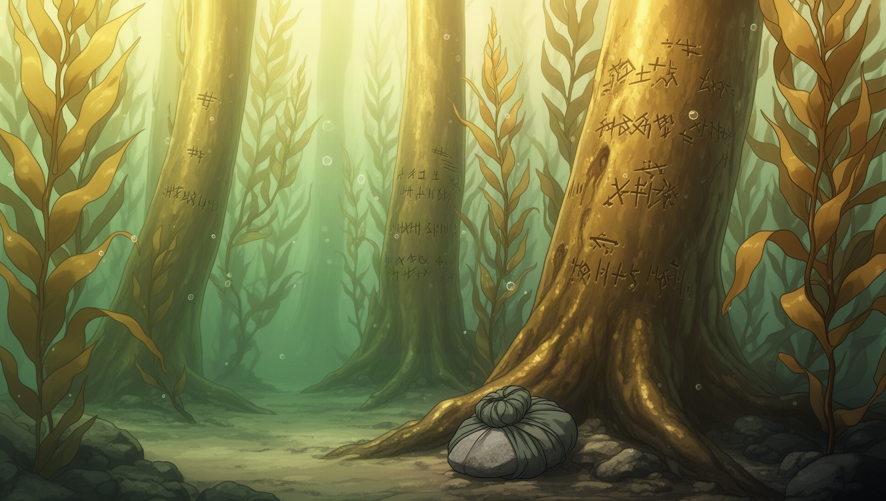
bg burial_kelpflux-2-t2i $0.024 art/refs/ch02/places/burial_kelp.pngused: ch2×1prompt
model: fal-ai/flux-2
purpose: background
refs:
Anime-style background illustration, clean line art, soft cel shading, gentle natural colours, wide landscape view, no people, no text. Underwater in a golden-green kelp forest, brass-coloured kelp trunks as thick as a man's waist. On the trunks at head height are rows of small carved scratches and notches, like old inscriptions worn smooth, with NO readable letters and no writing. The oldest carvings climb far up the trunks. At the foot of one trunk a small bundle wrapped in grey-green cloth rests, weighted with a stone.
 bg dome_crownflux-2-t2i $0.024 art/refs/ch02/places/dome_crown.pngused: ch2×1
bg dome_crownflux-2-t2i $0.024 art/refs/ch02/places/dome_crown.pngused: ch2×1prompt
model: fal-ai/flux-2
purpose: background
refs:
Anime-style background illustration, clean line art, soft cel shading, gentle natural colours, wide landscape view, no people, no text. Entirely underwater, deep under the sea at night, everything seen through blue-green water, no sky, no moon, no horizon, no land, no grass. The rounded crown at the top of a hill-sized dome of pale smooth curved panes held by seamless white metal ribs, with a flat circular platform at its very top where a person could stand. A faint silver shimmer of moonlight reaches down from the far-off surface. Below, stone terraces and kelp rows fade into dark blue water.
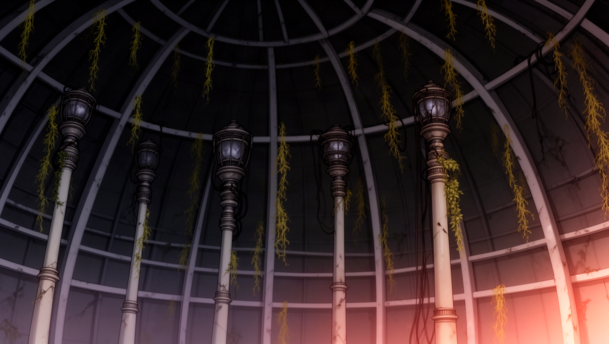
bg dome_dark_halfflux-2 $0.036 art/refs/ch02/places/dome_dark_half.pngused: ch2×1prompt
model: fal-ai/flux-2/edit
purpose: background
refs: art/refs/ch01/lamp/lamp_unlit.png
Anime-style background illustration, clean line art, soft cel shading, gentle natural colours, wide landscape view, no people, no text. Reference 1 is a lamp design. The inside of the dark half of a great ancient dome, dim, looking up along curved white metal ribs. Eleven dead lamps of exactly the design in reference 1 (a short pale post topped by a caged glass lens housing, with a few ribbed collars and cables) are fixed in a row along the ribs, all dark. Long strings of faintly glowing yellow-green weed hang against the dark panes. Evening, quiet, nobody there.
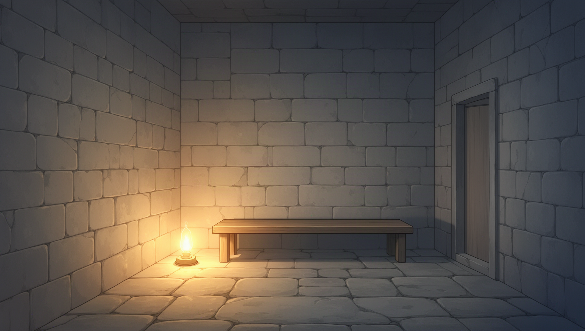
bg dry_roomflux-2-t2i $0.024 art/refs/ch01/places/dry_room.pngused: ch1×3prompt
model: fal-ai/flux-2
purpose: background
refs:
Anime-style background illustration, clean line art, soft cel shading, gentle natural colours, wide landscape view, no people, no animals, no text. The inside of a small plain stone room, dry air, no water and no bubbles, lit by warm lamplight, with a stone floor, a plain wooden bench along one wall, and a doorway. Quiet, still, plain.
 bg hall_dayflux-2-t2i $0.024 art/refs/ch02/places/hall_day.pngused: ch2×1
bg hall_dayflux-2-t2i $0.024 art/refs/ch02/places/hall_day.pngused: ch2×1prompt
model: fal-ai/flux-2
purpose: background
refs:
Anime-style background illustration, clean line art, soft cel shading, gentle natural colours, wide landscape view, no people, no text. The inside of a long dry stone hall deep under the sea, with NO windows at all, solid stone walls. A row of hammocks hung along both walls, plain stone floor, soft warm light from a few pale lamps on the walls, a wooden door at the far end. Quiet. No people.
 bg kelp_forestflux-2-t2i $0.024 art/refs/ch01/places/kelp_forest.pngused: ch1×2
bg kelp_forestflux-2-t2i $0.024 art/refs/ch01/places/kelp_forest.pngused: ch1×2prompt
model: fal-ai/flux-2
purpose: background
refs:
Anime-style background illustration, clean line art, soft cel shading, gentle natural colours, wide landscape view, no people, no animals, no text. The bottom of an underwater forest of giant kelp. The trunks are as thick as a man's waist and the colour of old brass, and rise straight up without a branch, further than the eye can follow. High overhead they open into long golden blades that lean all one way, like grass in a wind. Light comes down green at the edges and gold in the middle, and falls slowly across a sandy seabed.
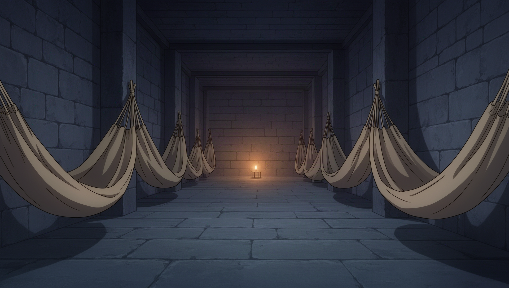
bg long_dry_hallflux-2-t2i $0.024 art/refs/ch01/places/long_dry_hall.pngused: ch1×1prompt
model: fal-ai/flux-2
purpose: background
refs:
Anime-style background illustration, clean line art, soft cel shading, gentle natural colours, wide landscape view, no people, no text. A long, dim, dry stone hall at night with a row of hammocks hung along both sides, plain stone floor, a faint warm lamp at the far end, quiet shadows. Nobody in it.
 bg meeting_hallflux-2 $0.036 art/refs/ch01/places/meeting_hall.pngused: ch1×1
bg meeting_hallflux-2 $0.036 art/refs/ch01/places/meeting_hall.pngused: ch1×1prompt
model: fal-ai/flux-2/edit
purpose: background
refs: art/refs/ch01/lamp/lamp_unlit.png
Anime-style wide illustration, clean line art, soft cel shading, gentle natural colours, no text. Reference 1 is the lamp. The inside of a round, high, empty meeting hall of cool grey stone, dim and quiet, lit only by a little dull light from far above, no people at all. The lamp from reference 1, exactly as designed, stands in the exact centre, floor to ceiling, dead and dark. Cool grey and blue-green colours, no red or pink.
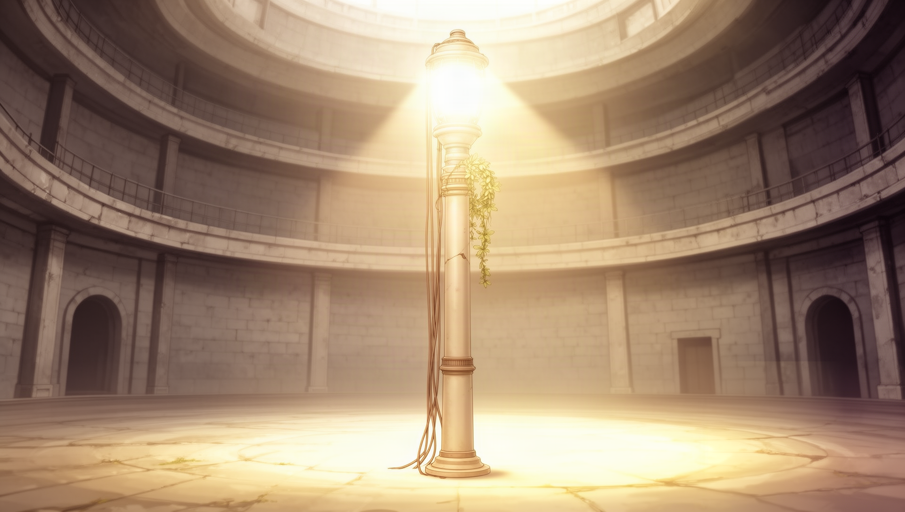
bg meeting_hall_litflux-2 $0.048 art/refs/ch01/places/meeting_hall_lit.pngused: ch1×1prompt
model: fal-ai/flux-2/edit
purpose: background
refs: art/refs/ch01/places/meeting_hall.png, art/refs/ch01/lamp/lamp_unlit.png
Anime-style background illustration, clean line art, soft cel shading, gentle natural colours, no text, no people. Reference 1 is a round meeting hall with a dead lamp in the centre. Reference 2 is the lamp. Show exactly the same hall from the same viewpoint, but now the lamp is lit: the glass lens at the top of the lamp from reference 2 blazes with bright, steady white light, and the light pours down over the whole hall, the floor and the walls, warm white and clear. The lamp itself is unchanged. The hall is empty.
 bg net_racksflux-2-t2i $0.024 art/refs/ch02/places/net_racks.pngused: ch2×1
bg net_racksflux-2-t2i $0.024 art/refs/ch02/places/net_racks.pngused: ch2×1prompt
model: fal-ai/flux-2
purpose: background
refs:
Anime-style background illustration, clean line art, soft cel shading, gentle natural colours, wide landscape view, no people, no text. Evening inside a warm lamplit stone dome: wooden racks hung with long fishing nets drying in rows, a stone floor, a bench with a net half mended, a bone needle lying on it. Warm and quiet, nobody there.
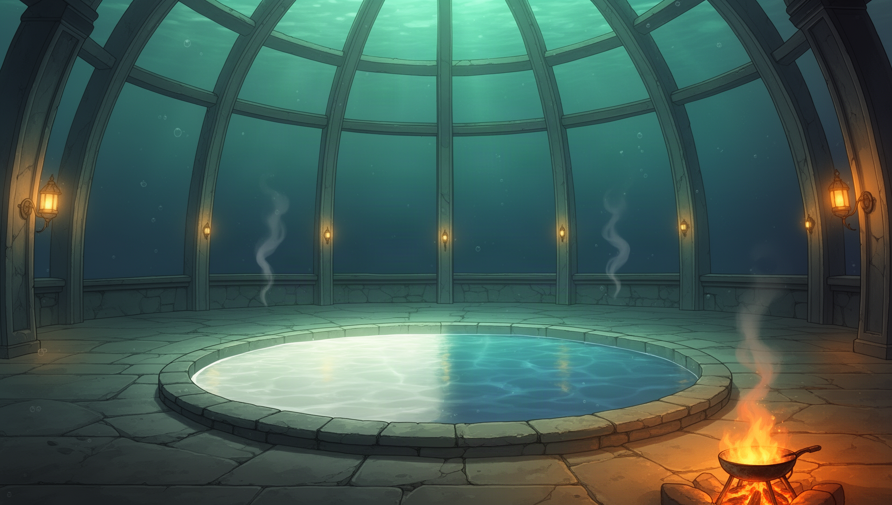
bg sea_doorflux-2-t2i $0.024 art/refs/ch01/places/sea_door.pngused: ch1×1prompt
model: fal-ai/flux-2
purpose: background
refs:
Anime-style background illustration, clean line art, soft cel shading, gentle natural colours, wide landscape view, no people, no text. The inside of a great ancient dome deep under the sea, lit by warm lamplight. Beyond the curved pale panes there is only dark blue-green sea water, no sky, no land. In the middle of the stone floor is a round pool, twenty paces across, its surface half water and half still air, glowing faintly. A little smoke drifts in the air and a small cooking fire burns at the edge of the stone floor. Quiet and warm.
 bg terrace_duskflux-2-t2i $0.024 art/refs/ch02/places/terrace_wrecked.pngused: ch2×2
bg terrace_duskflux-2-t2i $0.024 art/refs/ch02/places/terrace_wrecked.pngused: ch2×2prompt
model: fal-ai/flux-2
purpose: background
refs:
Anime-style background illustration, clean line art, soft cel shading, gentle natural colours, wide landscape view, no people, no text. Entirely underwater in daylight, everything seen through blue-green water, no sky, no clouds, no grass, no land above. Stone-walled kelp terraces wrecked, walls broken and stones scattered, kelp torn, black oily sludge staining the sand and turning the kelp brown and dead. Behind, a great pale dome with a long jagged crack running up its panes like a branch of lightning, sea water going in. Murky, grim.
 bg terrace_workflux-2-t2i $0.024 art/refs/ch01/places/terrace_work.pngused: ch1×1
bg terrace_workflux-2-t2i $0.024 art/refs/ch01/places/terrace_work.pngused: ch1×1prompt
model: fal-ai/flux-2
purpose: background
refs:
Anime-style background illustration, clean line art, soft cel shading, gentle natural colours, wide landscape view, no people, no text. Underwater, a tended kelp forest in golden-green light. Stone-walled terraces with rows of kelp, floating nets heaped with cut kelp fronds, harvesting hooks lying on a wall, a drying rack. A shoal of fat silver fish, each as long as an arm, grazes along the foot of a wall.
bg terrace_wreckedflux-2-t2i $0.024 art/refs/ch02/places/terrace_wrecked.pngused: ch2×4prompt
model: fal-ai/flux-2
purpose: background
refs:
Anime-style background illustration, clean line art, soft cel shading, gentle natural colours, wide landscape view, no people, no text. Entirely underwater in daylight, everything seen through blue-green water, no sky, no clouds, no grass, no land above. Stone-walled kelp terraces wrecked, walls broken and stones scattered, kelp torn, black oily sludge staining the sand and turning the kelp brown and dead. Behind, a great pale dome with a long jagged crack running up its panes like a branch of lightning, sea water going in. Murky, grim.
 bg terraces_domeflux-2-t2i $0.024 art/refs/ch01/places/terraces_dome.pngused: ch1×1
bg terraces_domeflux-2-t2i $0.024 art/refs/ch01/places/terraces_dome.pngused: ch1×1prompt
model: fal-ai/flux-2
purpose: background
refs:
Anime-style background illustration, clean line art, soft cel shading, gentle natural colours, wide landscape view, no people, no animals, no text. Underwater scene on the seabed, all of it under the sea, no grass and no soil: bare sand and stone. A tended kelp forest: kelp stands in neat rows, the sand between is raked clean. The ground rises in terraces, each walled with fitted stone. At the top stands a huge dome the size of a hill, made of a pale, smooth, milky material, neither glass nor stone, in great curved panes held by ribs of white metal with no rivet or seam. Kelp is trained up one side of it. The lower panes are worn dull. Light shines out of the dome on its left half only; the right half is dark, and long strings of weed hang against its dark panes, glowing a faint yellow-green.
 bg terraces_nightflux-2-t2i $0.024 art/refs/ch02/places/terraces_night.pngused: ch2×1
bg terraces_nightflux-2-t2i $0.024 art/refs/ch02/places/terraces_night.pngused: ch2×1prompt
model: fal-ai/flux-2
purpose: background
refs:
Anime-style illustration, clean line art, soft cel shading, gentle natural colours, wide landscape view, no people, no text. A split-level over-and-under view at night, the camera exactly at the sea surface. The TOP half of the picture is ABOVE the water: a dark night sky with a bright moon and the deck, cabin lights and masts of a rusty cargo barge. The BOTTOM half is UNDERWATER: the wavy waterline cuts across the middle of the barge's hull, so the upper half of the hull is in the air and the lower half of the hull is below the waves, the keel hanging down into dark blue water. The barge floats ON the surface. Far below, small, a pale dome on the seabed with stone terraces and kelp rows fading into the deep blue.
Illustrations (19)
 cg c2_bargeflux-2-t2i $0.024 art/refs/ch02/cg/barge.pngused: ch2×1
cg c2_bargeflux-2-t2i $0.024 art/refs/ch02/cg/barge.pngused: ch2×1prompt
model: fal-ai/flux-2
purpose: illustration
refs:
Anime-style wide illustration, clean line art, soft cel shading, gentle natural colours, cinematic composition, no text, no letters. A moonlit night at sea. A rusty steel cargo barge hangs high in the air on a thick pillar of sea water as steady as stone, the water streaming off its hull. On its deck the crew, all wearing black sailor uniforms, are in full panic: some run along the deck, some cling to the railings and rigging with both arms, some have fallen and crawl, others point and scream with their mouths open, hands in the air; no one stands calmly. From the barge's open hold long black threads of sludge are pouring back up into it. Silver moon, dark sea, wide dramatic view.
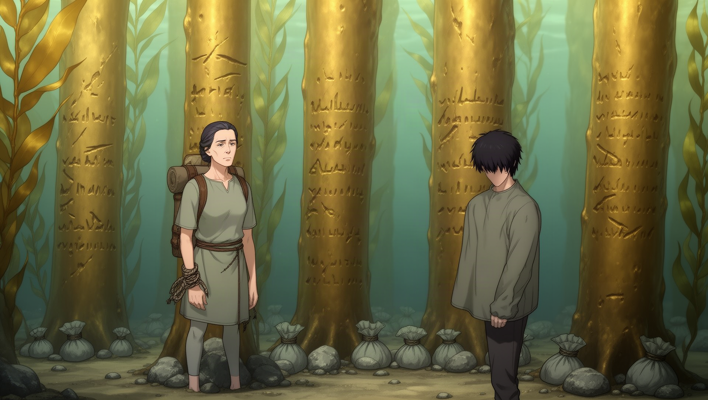
cg c2_burialflux-2 $0.048 art/refs/ch02/cg/burial.pngused: ch2×1prompt
model: fal-ai/flux-2/edit
purpose: illustration
refs: art/refs/ch02/portraits/hesper_shut.png, art/refs/ch01/portraits/wrack_tunic.png
Anime-style wide illustration, clean line art, soft cel shading, gentle natural colours, cinematic composition, no text, no letters, no numbers. The people look exactly like the reference images, in the order given. Reference 1 is Hesper, a lean hard woman with dark hair pulled back. Reference 2 is Wrack, a lean man with short BLACK hair and pale skin in a grey-green tunic. A quiet memorial under the sea in a golden-green kelp forest of tall brass-coloured kelp trunks, each trunk carved at head height with rows of small, worn, abstract notches and scratches like old inscriptions, nothing readable. At the foot of the trunks rest small wrapped bundles of grey-green cloth with stones on them. Hesper stands silent and upright beside one trunk, her face closed like a shut door, a pack on her back and a length of knotted cord tied round her wrist. Wrack stands a little apart, head bowed, his black hair clearly visible. Exactly two people.
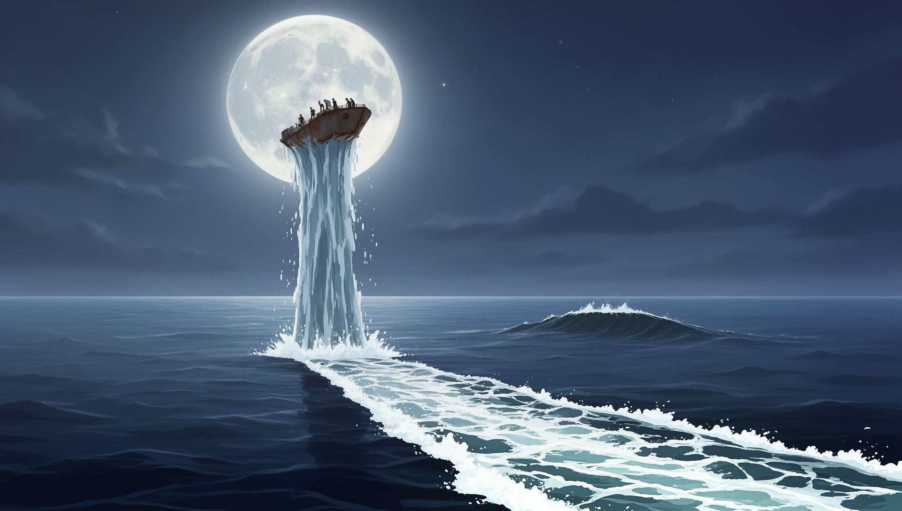
cg c2_carriedflux-2-t2i $0.024 art/refs/ch02/cg/carried.pngused: ch2×1prompt
model: fal-ai/flux-2
purpose: illustration
refs:
Anime-style wide illustration, clean line art, soft cel shading, gentle natural colours, cinematic composition, no text, no letters. A moonlit night at sea, wide view. A great pillar of sea water, steady as stone, is walking across the ocean carrying a rusty cargo barge high on its top away into the distance, leaving a long wake of churned white water behind it. The tiny barge is silhouetted against the huge moon, small black figures of its crew clinging to it. Far behind, small, the dark swell of the sea above a hidden hold. Eerie, vast and quiet.
 cg c2_dumpingflux-2-t2i $0.024 art/refs/ch02/cg/dumping.pngused: ch2×1
cg c2_dumpingflux-2-t2i $0.024 art/refs/ch02/cg/dumping.pngused: ch2×1prompt
model: fal-ai/flux-2
purpose: illustration
refs:
Anime-style wide illustration, clean line art, soft cel shading, gentle natural colours, cinematic composition, no text, no letters. Seen from underwater at night looking up: the rusty hull of a cargo barge floats on the moonlit surface, its belly hatch open, and thick black sludge pours slowly down through the water, spreading as it sinks like ink dropped in a glass. Far below, golden kelp blades curl and turn brown where the black fall touches them. Dark blue water, silver moonlight at the surface. No people.
 cg c2_giftflux-2 $0.036 art/refs/ch02/cg/gift.pngused: ch2×1
cg c2_giftflux-2 $0.036 art/refs/ch02/cg/gift.pngused: ch2×1prompt
model: fal-ai/flux-2/edit
purpose: illustration
refs: art/refs/ch02/portraits/hesper_tired.png
Anime-style wide illustration, clean line art, soft cel shading, gentle natural colours, cinematic composition, no text, no letters. Reference 1 is Hesper, a lean hard woman with dark hair pulled back. Underwater at night, a side view of Hesper holding in her two hands a slab of living sea water, clear and glowing faintly, leaning it like a board against a falling curtain of black sludge. A strong clear current carries the black fall sideways, away from nursery beds of young silver fish below. Her face is set and strained, her hands pale and chapped. Exactly one person.
 cg c2_gunboatsflux-2-t2i $0.024 art/refs/ch02/cg/gunboats.pngused: ch2×1
cg c2_gunboatsflux-2-t2i $0.024 art/refs/ch02/cg/gunboats.pngused: ch2×1prompt
model: fal-ai/flux-2
purpose: illustration
refs:
Anime-style illustration, clean line art, soft cel shading, gentle natural colours, wide landscape view, no people, no text. A split-level over-and-under view in daylight, the camera exactly at the sea surface. The TOP half is ABOVE the water: pale sky, and the decks, guns and masts of three grey gunboats, each with a blue shield-shaped crest on its bow. The BOTTOM half is UNDERWATER: the wavy waterline cuts across the middle of each gunboat's hull, the lower half of each hull below the waves. The gunboats float ON the surface. Far below, small, a pale dome on the seabed. Menacing, quiet.
 cg c2_hesper_tryingflux-2 $0.036 art/refs/ch02/cg/hesper_trying.pngused: ch2×1
cg c2_hesper_tryingflux-2 $0.036 art/refs/ch02/cg/hesper_trying.pngused: ch2×1prompt
model: fal-ai/flux-2/edit
purpose: illustration
refs: art/refs/ch02/portraits/hesper.png
Anime-style wide illustration, clean line art, soft cel shading, gentle natural colours, cinematic composition, no text, no letters. Reference 1 is Hesper, a lean hard woman with dark hair pulled back. Underwater at night. Hesper stands alone on the flat crown of a pale dome with her arms spread wide and her head thrown back, straining, her grey-green tunic streaming. Above her a vast curtain of falling black sludge bends sideways, pushed aside by an invisible strong current. She is small beneath an enormous falling blackness. Exactly one person.
 cg c2_lampsflux-2 $0.060 art/refs/ch02/cg/lamps.pngused: ch2×1
cg c2_lampsflux-2 $0.060 art/refs/ch02/cg/lamps.pngused: ch2×1prompt
model: fal-ai/flux-2/edit
purpose: illustration
refs: art/refs/ch01/portraits/oro.png, art/refs/ch01/portraits/wrack_tunic.png, art/refs/ch01/lamp/lamp_unlit.png
Anime-style wide illustration, clean line art, soft cel shading, gentle natural colours, cinematic composition, no text. Reference 1 is Elder Oro, a very old bald man with a gentle face. Reference 2 is Wrack, a young-looking man with short BLACK hair in a grey-green tunic. Reference 3 is the lamp design. Inside the dark half of a great ancient dome, quiet and dim. On the left sits Elder Oro cross-legged on the floor with a small contented smile, serene. On the right stands Wrack beside one lamp of exactly the design in reference 3 (pale post, caged glass lens), his two hands resting on its post, calm and attentive, mouth closed, quietly wondering; the lens of that lamp has just lit and glows softly warm. A few other identical lamps stand dark along the curved white ribs behind them. There are exactly TWO people in the whole picture: Oro and Wrack, each shown once. Soft subdued mood.
 cg c2_liftingflux-2 $0.036 art/refs/ch02/cg/lifting.pngused: ch2×1
cg c2_liftingflux-2 $0.036 art/refs/ch02/cg/lifting.pngused: ch2×1prompt
model: fal-ai/flux-2/edit
purpose: illustration
refs: art/refs/ch02/portraits/wrack_tunic_shaken.png
Anime-style wide illustration, clean line art, soft cel shading, gentle natural colours, cinematic composition, no text, no letters. Reference 1 is Wrack, a lean man with short BLACK hair in a grey-green tunic. Entirely underwater at night, deep blue-green water, a rocky seabed with kelp, no beach, no sand dunes, no sky. Looking up, the silver sea surface stretches overhead like a ceiling, and a huge pillar of sea water, the full width of a ship, pushes up through the surface lifting the dark hull of a barge out of the ocean; rings of pressure spread through the water like a struck bell, bending the kelp. Small in the foreground on the seabed, Wrack on his knees with his head thrown back and his arms open, eyes wide. Exactly one person.
 cg c2_needleflux-2 $0.036 art/refs/ch02/cg/needle.pngused: ch2×1
cg c2_needleflux-2 $0.036 art/refs/ch02/cg/needle.pngused: ch2×1prompt
model: fal-ai/flux-2/edit
purpose: illustration
refs: art/refs/ch02/portraits/okonta.png
Anime-style wide illustration, clean line art, soft cel shading, gentle natural colours, cinematic composition, no text. Reference 1 is Okonta, a spare older woman with dark brown skin and short grey hair in a slate-grey high-collared suit. Entirely underwater at dusk, deep blue-green water everywhere, no sky, no horizon, drifting particles, dim blue light. Over wrecked stone terraces on the seabed a sliver of pale metal floats free in the water with nothing holding it: three times the length of a man, no thicker than a kelp stem, pointed at both ends, smooth, with no rudder, no screw and no window; a soft light runs along its flank like the light on a fish. Okonta is stepping off its side down onto the broken terrace, grave and composed. There is exactly ONE person in the picture: Okonta. No one else.
 cg c2_netsflux-2-t2i $0.024 art/refs/ch02/cg/nets.pngused: ch2×1
cg c2_netsflux-2-t2i $0.024 art/refs/ch02/cg/nets.pngused: ch2×1prompt
model: fal-ai/flux-2
purpose: illustration
refs:
Anime-style wide illustration, clean line art, soft cel shading, gentle natural colours, cinematic composition, no text, no letters. Underwater at night on stone kelp terraces. A group of mariner Tenders, long-limbed dark-eyed people in grey-green sea-silk tunics, hold up long fine-meshed nets weighted at the corners, spread under a falling curtain of thick black sludge and catching it. Other Tenders fold the black sludge into hide bladders and seal them with wax. Further back old women plant bitterwrack along the terrace edges with baskets. Grim, tired, steady work, dark blue water, moonlight from far above.
 cg c2_panicflux-2 $0.048 art/refs/ch02/cg/panic.pngused: ch2×1
cg c2_panicflux-2 $0.048 art/refs/ch02/cg/panic.pngused: ch2×1prompt
model: fal-ai/flux-2/edit
purpose: illustration
refs: art/refs/ch01/portraits/sefa.png, art/refs/ch02/portraits/hesper.png
Anime-style wide illustration, clean line art, soft cel shading, gentle natural colours, cinematic composition, no text, no letters. Reference 1 is Sefa, a thin girl with dark hair tied back, reference 2 is Hesper, a lean woman with dark hair pulled back. Underwater at night, a sudden powerful surge of water sweeps sideways through the kelp terraces: nets, hooks and baskets whirl through the water, mariner Tenders in grey-green tunics and seal-like grey tide hounds with collars tumble in the current, frightened, scrambling. In the foreground Sefa is thrown against a stone terrace wall, stunned, her eyes shut. Behind her Hesper swims hard, reaching out a hand toward two old women being carried along by the current. Panic and chaos, dark blue water.
 cg c2_preparingflux-2 $0.048 art/refs/ch02/cg/preparing.pngused: ch2×1
cg c2_preparingflux-2 $0.048 art/refs/ch02/cg/preparing.pngused: ch2×1prompt
model: fal-ai/flux-2/edit
purpose: illustration
refs: art/refs/ch02/portraits/wrack_tunic_resolved.png, art/refs/ch02/portraits/ione_pain.png
Anime-style wide illustration, clean line art, soft cel shading, gentle natural colours, cinematic composition, no text, no letters. Reference 1 is Wrack, a lean man with short BLACK hair in a grey-green tunic. Reference 2 is Ione, a sturdy healer with brown hair in a low bun and sleeves rolled up. Underwater at night. Wrack and Ione each hold a corner of a long net under a falling curtain of black sludge. A splash of black sludge has hit Ione's bare forearm; she hisses through her teeth and keeps working, grimacing. Wrack, beside her, has stopped and looks up at the long dark hull of the barge above, his whole face and body filled with a sudden fierce wanting, fists tight, the water around him beginning to stir. Exactly two people in the foreground.
 cg healingflux-2 $0.060 art/refs/ch01/cg/healing.pngused: ch1×2
cg healingflux-2 $0.060 art/refs/ch01/cg/healing.pngused: ch1×2prompt
model: fal-ai/flux-2/edit
purpose: illustration
refs: art/refs/ch01/portraits/ione.png, art/refs/ch01/portraits/wrack.png, art/refs/ch01/portraits/oro.png
Anime-style wide illustration, clean line art, soft cel shading, gentle natural colours, cinematic composition, no text. The people look exactly like the reference images, in the order given. Reference 1 is Ione, reference 2 is Wrack, reference 3 is Elder Oro. Exactly three people in the picture and nobody else. A plain stone room lit by warm lamplight. On the left, Wrack, a man in a torn grey jacket, sits on the floor, head bowed, eyes closed. In the middle, Ione, a calm middle-aged healer with brown hair in a low bun and no ribbon, of ordinary sturdy build, sleeves rolled to the elbow, forearms ridged with old pale healed scars, kneels facing Wrack and looks down at him with steady, gentle eyes. In her two cupped hands she holds a glowing sphere of water that keeps its shape, and she is lowering it onto the top of Wrack's head, which it touches. A shallow bowl on the floor beside her. On the right, Elder Oro, very old and bald with a carved stick, sits on a bench watching.
 cg lamp_onflux-2 $0.072 art/refs/ch01/cg/lamp_on.pngused: ch1×1
cg lamp_onflux-2 $0.072 art/refs/ch01/cg/lamp_on.pngused: ch1×1prompt
model: fal-ai/flux-2/edit
purpose: illustration
refs: art/refs/ch01/portraits/oro.png, art/refs/ch01/portraits/wrack_tunic.png, art/refs/ch01/portraits/sefa.png, art/refs/ch01/lamp/lamp_unlit.png
Anime-style wide illustration, clean line art, soft cel shading, gentle natural colours, no text. Reference 1 is Elder Oro, reference 2 is Wrack in a grey-green tunic, reference 3 is Sefa, reference 4 is the lamp. A round, high meeting hall flooded with white steady light pouring down from the lens of the lamp from reference 4, exactly as designed, in the centre of the hall; the lens blazes white. There is exactly ONE bald old man in the whole picture: Elder Oro, who has sat down slowly on the floor in the foreground, leaning on his carved stick, and weeps. Wrack stands near the lamp, frightened and amazed. Sefa beside him, wide-eyed. Villagers frozen where they stand, a child shrieking, a dropped basket with shellfish rolling across the stone floor.
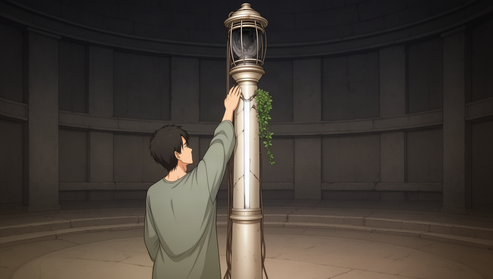
cg lamp_seamflux-2 $0.048 art/refs/ch01/cg/lamp_seam.pngused: ch1×1prompt
model: fal-ai/flux-2/edit
purpose: illustration
refs: art/refs/ch01/portraits/wrack_tunic.png, art/refs/ch01/lamp/lamp_unlit.png
Anime-style wide illustration, clean line art, soft cel shading, gentle natural colours, no text. Reference 1 is Wrack in a plain grey-green tunic, reference 2 is the lamp. There is exactly one person in the picture: Wrack, seen from behind, standing alone in a dim round hall. He reaches up with both hands to the lamp from reference 2, exactly as designed, at shoulder height of the column, where a hairline seam in the pale metal is opening and a thin line of white light shines out of it. The glass lens at the top of the lamp is still dark. No one else anywhere.
 cg sea_doorflux-2 $0.048 art/refs/ch01/cg/sea_door.pngused: ch1×1
cg sea_doorflux-2 $0.048 art/refs/ch01/cg/sea_door.pngused: ch1×1prompt
model: fal-ai/flux-2/edit
purpose: illustration
refs: art/refs/ch01/portraits/wrack.png, art/refs/ch01/portraits/sefa.png
Anime-style wide illustration, clean line art, soft cel shading, gentle natural colours, cinematic composition, no text. The people look exactly like the reference images, in the order given. Reference 1 is Wrack, reference 2 is Sefa. Wrack, a man in a torn grey jacket, rises out of a round pool set in the stone floor of a great ancient dome, water streaming off him, taking his first breath of air, hurting a little. Sefa stands at the pool's edge. Warm lamplight, a little smoke, a cooking fire; a great many mariner people in grey-green tunics stand around the pool looking at him.
 cg swimflux-2 $0.060 art/refs/ch01/cg/swim.pngused: ch1×1
cg swimflux-2 $0.060 art/refs/ch01/cg/swim.pngused: ch1×1prompt
model: fal-ai/flux-2/edit
purpose: illustration
refs: art/refs/ch01/portraits/sefa.png, art/refs/ch01/portraits/wrack.png, art/refs/ch01/portraits/bother.png
Anime-style wide illustration, clean line art, soft cel shading, gentle natural colours, cinematic composition, no text. The people look exactly like the reference images, in the order given. Reference 1 is Sefa, reference 2 is Wrack, reference 3 is Bother. Underwater in a golden-green kelp forest, shafts of light from above. Sefa, a thin girl of sixteen in a short grey-green sleeveless tunic with bare arms, bare legs and BARE FEET, no boots, swims easily ahead through the water. Behind her Wrack, a man in a torn grey jacket and heavy black surface boots, struggles to swim, awkward and clumsy. Bother, a grey seal-like animal with a plaited cord collar, swims upright and level ahead of them, looking back. Brass-coloured kelp trunks all around.
 cg wakeflux-2 $0.060 art/refs/ch01/cg/wake.pngused: ch1×1
cg wakeflux-2 $0.060 art/refs/ch01/cg/wake.pngused: ch1×1prompt
model: fal-ai/flux-2/edit
purpose: illustration
refs: art/refs/ch01/portraits/wrack.png, art/refs/ch01/portraits/sefa.png, art/refs/ch01/portraits/bother.png
Anime-style wide illustration, clean line art, soft cel shading, gentle natural colours, cinematic composition, no text. The people look exactly like the reference images, in the order given. Reference 1 is Wrack, reference 2 is Sefa, reference 3 is Bother. Underwater at the bottom of a forest of giant brass-coloured kelp, golden-green light from above. Wrack, a man in a torn grey jacket, grey trousers and heavy black surface boots, lies on his back on the sand with a kelp frond across his face, one hand just lifting it, looking up bewildered. Sefa, a thin girl of about sixteen with dark hair tied back with a shining strip, is the only girl in the picture. She floats upright above and to the right of him, her two bare slim human legs and two bare feet fully visible, holding ONE long wooden pole in her hand whose end is a single curved metal hook like a sickle blade, a smooth crescent, NOT a fork, NOT a rake, NOT tines. She is wary. Close beside his ribs is the whiskered grey face of Bother, a seal-like hound with small folded ears, eyes open and pleased.
Fixed features (canon)
Wrack: adult man, lean, short messy BLACK hair, light skin, dark brown eyes, calm face (age not stated; reads late thirties)
Sefa: girl of about sixteen, thin, long arms and legs, dark hair tied up in a high ponytail with a shining silver-white strip, large nearly black eyes, light skin (choice)
Bother: tide hound: sleek grey seal body, broad flippers, blunt square head, whiskered grey muzzle, brown eyes set forward, small folded drooping ears (NOT pointed), collar of plaited cord
Elder Oro: very old man, bald warm brown (orange-brown) head with grey hair at the sides, warm brown skin, gentle slightly amused look; loose grey-green robe, carved wooden stick
Ione: sturdy middle-aged woman (Sefa's mother, the hold's healer), brown hair in a low bun, no ribbon, sleeves rolled to the elbow, both forearms ridged wrist to elbow with old pale healed shiny scars, calm; grey-green tunic with a belt. NOT heavy-set.
Davin: quiet big-handed man, short dark hair, slow smile, net-mender; grey-green tunic with frog fastenings, trousers
Hesper: the hold's Tidecaller, lean hard woman of about forty (reads older), strong tired face, dark hair pulled back, hands chapped white to the wrist; grey-green sea-silk tunic
Okonta: spare woman of about sixty, DARK BROWN skin, short GREY hair, close slate-grey high-collared suit, thin pale scars like pen lines from the temples down both sides of the neck under the collar (Threaded). The only person with dark skin and grey hair in a scene.